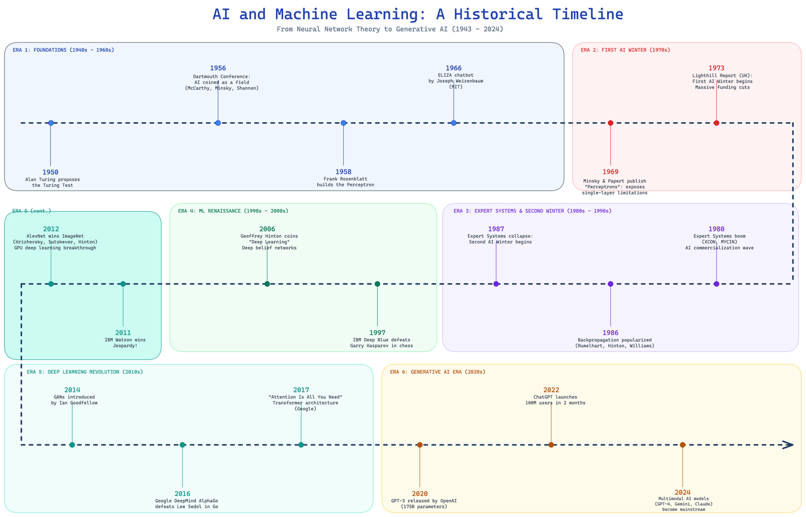

Introduction
Artificial intelligence has evolved through a series of breakthroughs, setbacks, and renewed advances rather than through steady, uninterrupted progress. This artifact presents this development as six major eras, beginning with foundational ideas in the mid-twentieth century and extending to the rise of generative AI in the 2020s.
That structure is important because it shows that modern AI did not emerge suddenly. It is the result of decades of experimentation, changing research methods, improved computing power, and repeated lessons learned from earlier limitations. The central idea of this artifact is that AI history is best understood as a cycle of innovation, disappointment, recovery, and transformation.
Description
This timeline stretches from 1950 to 2024 across six distinct eras. Each era reflects changes in research priorities, computing power, funding, and public expectations. It emphasizes that AI progress has not been linear. Instead, major breakthroughs were often followed by periods of slowdown known as AI winters.
The six-era model helps explain how today’s generative AI systems emerged from earlier work in symbolic reasoning, neural networks, expert systems, machine learning, and deep learning.
Objective
The objective of this artifact is to explain the six major eras of AI development and show how each stage contributed to the rise of modern artificial intelligence. It is designed to help readers understand the historical path of AI, the reasons for its periods of growth and decline, and the significance of the current generative AI era.
Original Diagram

Process & Tools
The timeline was developed through a structured review of the cited resources:
- Identify the main historical section in the presentation.
- Review the six eras and the major milestones attached to each one.
- Extract the recurring themes across the timeline, including shifts in methods, computing power, and funding.
- Organize the material into a clear narrative that explains not only what happened, but why each stage mattered.
- Summarize the historical progression in a concise table and flow structure to make the artifact easier to read.
Summary of the Six Major Eras
| Era | Time Period | Main Development | Historical Importance |
|---|---|---|---|
| Foundations | 1950–1966 | Turing Test, Dartmouth Conference, perceptron, ELIZA | Established AI as a research field and introduced the earliest competing approaches |
| First AI Winter | 1969–1973 | Criticism of neural network limits and lack of progress | Reduced optimism and funding, exposing the gap between ambition and technical reality |
| Expert Systems & Second AI Winter | 1980–1987 | Growth of rule-based expert systems and later market collapse | Showed commercial promise, but also the difficulty of scaling brittle systems |
| Machine Learning Renaissance | 1997–2006 | Deep Blue and revival of deep learning | Shifted attention toward data-driven methods and renewed interest in neural networks |
| Deep Learning Revolution | 2011–2017 | Watson, AlexNet, AlphaGo, transformers | Demonstrated the power of large datasets, better hardware, and modern neural architectures |
| Generative AI Era | 2020–2024 | GPT-3, ChatGPT, multimodal AI | Brought AI into mainstream public use and expanded its role in communication and content creation |
Conceptual Flow of AI Development
Foundational Ideas
Turing test and early competing systems establishing the initial trajectory.
High Expectations & Limits
Initial euphoria met severe technical limits, leading to the First AI Winter.
Rule-Based Business Success
The bloom of logical Expert Systems trying to perfectly encode human rules.
Collapse & Reassessment
Brittle rule-sets failed to scale, prompting the Second AI Winter crash.
Machine Learning Revival
The dawn of big data pipelines, allowing statistical learning to outpace rules.
Deep Learning Breakthroughs
Neural Networks supercharged by GPU compute—AlexNet, AlphaGo, and early Transformers.
Generative & Multimodal AI
The explosion of foundational models mastering text, vision, and natural interaction.
Value Proposition & Relevance
This artifact provides value by turning a broad timeline into a clear explanation of how artificial intelligence developed over time. Instead of viewing AI as a single invention or a recent trend, the artifact shows it as a layered progression shaped by technical discoveries, market realities, and evolving expectations. This gives readers a stronger understanding of why today’s AI tools are powerful, why earlier systems fell short, and why responsible progress requires learning from the past.
The unique value lies in placing present-day AI within a much longer story. By organizing the material around six eras, it becomes easier to see how the field matured, how setbacks redirected research, and how breakthroughs in one era often depended on lessons from a previous one.
Looking Forward
The future of AI will depend not only on technical performance, but also on ethical considerations, integration challenges, and sustainable development. As AI systems become more powerful, concerns about bias, fairness, accountability, reliability, safety, and environmental impact become more important. These concerns make historical understanding even more valuable, because the past shows that long-term success in AI depends on balancing innovation with practical responsibility.